Folding your Cootie Catcher | |
| 1. Print out a cootie catcher. 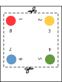 |
2. Cut out the cootie catcher on the dotted lines. 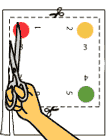 |
3. Fold two opposite diagonal corners together, then open back up. 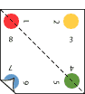 |
4. Fold the other two opposite corners together, then open back up. 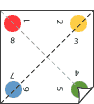 |
5. You should have folded lines like this. The lines cross at the center of the paper. 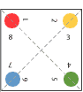 |
6. Turn paper printed side down. Fold all four corners to the center of the paper. 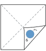 |
7. When all four corners are folded, your catcher will look like this. 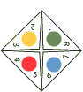 |
8. Flip your paper over so the Arthur characters are face down. |
9. Again, fold all four corners to the center of the paper. 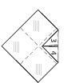 |
10. When all four corners are folded, your catcher will look like this. 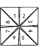 |
11. Fold any two sides together. Make sure the numbers are in the inside, faces on the outside. 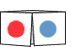 |
12. Slide your thumbs and fingers under the four flaps. 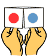 |
13. Finally, rotate your hands, bringing your thumbs and index fingers together. The cootie catcher should expand. The numbered triangles will disappear inside, like the middle of a flower when the petals close. Then open and play! |
|||
| Playing with your Cootie Catcher |
|
You can play your own version of Cootie Catcher, or my version: First, with the Cootie Catcher closed, choose one of my four friends. Then close-and-open the Cootie Catcher once for each letter in my friend's name, leaving it open at the end so that you see four numbers inside. (When you open and close it, open it once with your forefinger and thumb on each hand together. Then open it with your two forefingers together and your two thumbs together.) Second, choose one of the four numbers, and close-and-open the Cootie Catcher that many times, again ending with it open. Last, choose one of the four numbers, and lift up that flap to reveal your fortune or personal message. |